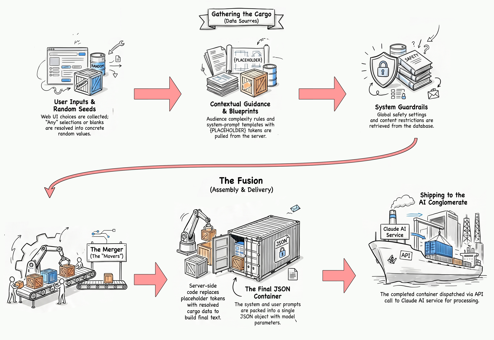
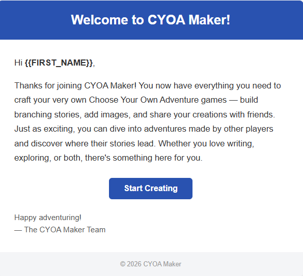

Project Overview
1. Introduction
1.1 What is CYOA Maker?
CYOA Maker is a web application that lets users create and play Choose Your Own Adventure stories - interactive, branching narratives where the reader makes choices that determine how the story unfolds. Think of it as a lightweight, browser-based tool for writing the kind of adventure books that were popular in the 1980s and 1990s, but published on the web and playable by anyone with a browser.
A story is made up of scenes - individual moments in the narrative. Each scene can have one or more choices that link to other scenes, creating a web of possible paths through the story. Authors control the flow, and players experience a different adventure depending on the decisions they make.
This report covers the upgraded version of the app. The original CYOA Maker was a build-and-play tool; this version adds a full social layer (ratings, comments, favourites, and view counts) and, most importantly, AI assistance - authors can have the AI generate images, write individual scenes, or produce an entire branching story from a single idea.

1.2 The Upgrade: Purpose and Goals
The first version of CYOA Maker delivered the core experience - a place to build branching stories and play them in the browser. This upgrade builds on that foundation, extending the app in two directions: a social layer that connects readers and authors, and AI assistance woven into the authoring process.
The upgrade had two main goals:
- Make the app feel like a real community platform - add ratings, favourites, comments, and view tracking, plus a story summary page that sits between the gallery and the player.
- Put AI tools directly in the author's hands at three levels: generating a single image, writing a single scene, or producing a whole branching story from a premise.
Supporting goals carried over from the original project:
- Anyone can play stories without an account.
- Registered users can create, edit, and publish their own stories.
- A visual theme system gives each story its own look and feel.
- Account management with email-based password reset.
- An admin panel for managing users, stories, and site settings.
- The app stays easy to deploy on standard shared hosting.
2. Features & How It Works
2.1 Browsing and Playing Stories
The homepage (index.php) displays a gallery of all published stories as cards.
Each card shows the story's cover image, title, author, genre, and three interactive stats:
views, likes, and average star rating.
No login is required to browse or play - the app is open to anyone. Logged-in users also get
filters for My Stories and Favourites, plus a search box.
Clicking a story opens its summary page first (see 2.2), and from there the player
(play.php) renders one scene at a time - its title, narrative text, and optional
image - along with clickable choice buttons that advance the story. Players follow the branching
path until they reach an ending (a scene with no choices).

2.2 The Story Summary Page & Social Features
A new summary page (summary.php) now sits between the gallery and
the player. It shows the cover, description, stats, and comments, so a reader can preview a story
before committing to it. Play and (for the author) Edit buttons sit at the top.
On top of the summary page, the upgrade adds a full social layer:
- Ratings - each logged-in user can give a story one to five stars (once per story); the average shows on the gallery card.
- Favourites - bookmark a story and find it again from your profile.
- Comments - leave a comment, and reply to other comments (one level of nesting). Admins and story owners can moderate.
- View tracking - every visit to a published story's summary page counts a view.
All of this runs through a dedicated AJAX endpoint (api_social.php) so likes,
ratings, and comments update without a full page reload.

2.3 Creating and Editing Stories
Registered users build stories in the editor (editor.php). Each scene has a title,
narrative text, an image, a hint, and a list of choices; every choice links to another scene.
Stories also have a draft / published status. Only published stories appear in the public gallery. To protect work in progress, editing a published story happens on a hidden "shadow draft" - the live version stays online until the author re-publishes. Deleting a story moves it to a trash bin (soft delete) rather than erasing it immediately.

Two extra views make a branching story easier to manage:
- Tree View - an SVG map of every scene and the choices that connect them, so
the author can spot dead ends and missing links at a glance.

- Gallery View - all of a story's images in one place (the cover first, then
every scene that has artwork).

2.4 AI Story Generation
The main feature of this project is AI assistance, offered at three levels so authors can get as much or as little help as they want:
- Level 1 - Images. Describe a scene and the AI draws an illustration that matches it, replacing the manual file upload.
- Level 2 - Single scenes. Give a direction and the AI writes one scene - title, text, hint, and choices - to slot into the story.
- Level 3 - Full stories. Give a single idea, like "a mystery set in medieval Japan", and the AI plans and writes an entire branching story, artwork included.
Because the AI services can take a while, none of this blocks the page. Every request becomes a background job that is processed out of sight and applied to the story when it finishes; the header shows a badge when a job is done.

2.5 The AI Job Queue
AI calls are slow - a few seconds for story text to over a minute for an image - and shared hosting cannot keep a web request open that long. So AI work runs through an asynchronous job queue instead of blocking the page.
This interactive job queue visualizer shows how job requests are passed from the UI to the database, picked up by a backend process that sends the job to the AI, and then stores the returning content back in the database.

- The user clicks "Generate". PHP writes a new row to the
cyoa_ai_jobstable (statuspending) and returns immediately. - A dispatcher (
cron/ai_dispatcher.php), run by cron, claims pending jobs and spawns a worker for each. - The worker (
cron/ai_worker.php) routes the job to the right handler (image, scene, or story), calls the AI, saves the result, and marks the jobcompleted. - The browser polls
api_jobs.phpevery few seconds and updates the header badge when a job finishes.
The cyoa_ai_jobs table tracks every AI request with its input, output, status, and
cost. The job queue page (job_queue.php) lists all active jobs with options to
retry or cancel, while the job history page (job_history.php) shows a paginated
list of past jobs and their details.

2.6 Prompt Assembly
Prompts are built by merging multiple data sources together into a master prompt. It mixes values from the web UI like genre, audience, and image style, adds in safety constraints and other guidance data, and then merges everything into a pre-written prompt template. The prompt is processed by the AI which returns a structured JSON response that is parsed and applied to the story. For full-story generation, the prompt includes instructions to create a high-level narrative plan. From there the process develops individual scenes and images to ensure a cohesive experience.
Anatomy of the AI Prompt Assembly Line

Prompt Assembly Explainer Video
This AI-generated video by NotebookLM does a great job breaking down how a full story is made.
For a detailed flowchart of how the prompt assembly process works, see Appendix B - Architecture.
2.7 Themes and Fonts
Each story has a visual theme that controls the look of its play page - the background, text, and accent colours plus a pair of fonts. Unlike the original five fixed CSS themes, the upgrade uses a data-driven theme engine: a single CSS-variable template is filled in from values stored on the story, so there is no limit on the number of looks, and the AI can generate a matching colour palette per story.
Fonts are chosen from a curated, mood-tagged allow-list of Google Fonts that are
guaranteed to load, and the three image layouts (image_left, image_right,
image_top) from the original version are still supported. A story's theme is purely
visual - it is never sent to the AI; the semantic hint the AI receives is the story's
genre.


2.8 User Accounts and API Keys
Users register with their name, email, and a password, then manage their profile from the
account page (account.php). Passwords are never stored in plain text - they are
hashed with bcrypt before being saved.
Because AI generation costs money, the account page also offers "bring your own key" (BYOK): a user can paste in their own Claude or OpenAI API key so their AI usage is billed to them instead of the site. Heavy users can keep creating without using up the site's shared limits.

2.9 Admin Panel
Administrators get extra screens for running the site, split into three areas:
- Site settings (
settings_site.php) - AI models, quality, job limits and timeouts, gallery sizes, and the site title. - Content settings (
settings_content.php) - the editable lists of genres, image styles, moods, and the content guardrails that keep AI output appropriate. - User management (
settings_users.php) - view, edit, and delete accounts, and see which users have their own API keys.
A maintenance section handles automatic cleanup of trashed stories and old log
files. The protected super-admin account is defined in config.php via the
MAIN_ADMIN constant so it can never be demoted or deleted.


2.10 Email Notifications
The app uses PHPMailer with Gmail SMTP to send two types of emails:
- Welcome email - sent automatically when a new user registers, using an HTML template.
- Password reset email - when a user requests a reset, a unique time-limited token is generated and emailed as a link. The token expires after one hour for security.

3. Technical Breakdown
3.1 Tech Stack Overview
| Layer | Technology | Notes |
|---|---|---|
| Backend language | PHP 8.3 (procedural) | No framework - plain PHP files |
| Database | MySQL / MariaDB (mysqli) | Prepared statements throughout |
| Text AI | Claude API (Anthropic) | Scene and full-story generation |
| Image AI | OpenAI Images (gpt-image-2) | Model configurable in settings |
| Background jobs | PHP CLI + cron | Dispatcher / worker scripts |
| PHPMailer + Gmail SMTP | Welcome emails and password resets | |
| Front-end | Vanilla JavaScript | No frameworks (no React, jQuery, etc.) |
| Fonts | Inter + a curated Google Fonts allow-list | Per-story play fonts |
3.2 Directory Structure
The project is organized as a single web root folder. Here are the key files and folders:
cyoa_ai/
├── config.php # DB, SMTP, MAIN_ADMIN, AI pricing reference data
├── settings.php # Loads runtime AI settings; app_setting() helper
├── db_functions.php # All database CRUD (users, stories, scenes, jobs, social…)
├── index.php # Homepage - story gallery
├── summary.php # Story landing page - stats, comments, play/edit
├── editor.php # Story & scene editor (+ Tree View, Gallery View)
├── play.php # Story player (themed)
├── gallery.php # Per-story image gallery
├── account.php # Profile + BYOK API keys
├── job_queue.php # AI job list (retry / cancel / detail)
├── job_history.php # Paginated job history
├── trash.php # Soft-deleted stories
├── settings_site.php # Admin - site settings
├── settings_content.php # Admin - genres, styles, moods, guardrails
├── settings_users.php # Admin - user management
├── header.php # Shared nav bar + job-badge polling
│
├── api_jobs.php # AJAX - job queue (status, create, retry, apply…)
├── api_social.php # AJAX - ratings, favourites, comments
├── api_create_story_ai.php # Full-story AI creation endpoint
├── api_tree.php # Scene-graph data for Tree View
│
├── cron/ # Background AI processing (PHP CLI)
│ ├── ai_dispatcher.php # Claims pending jobs, spawns workers
│ ├── ai_worker.php # Processes one job, routes to a handler
│ ├── ai_story_handler.php / ai_scene_handler.php / ai_image_handler.php
│ ├── ai_apply.php # Applies AI results to the database
│ └── maintenance.php # Daily cleanup (trash + logs)
│
├── prompts/ # AI prompt templates (.txt with {PLACEHOLDER} tokens)
├── data/ # Data-driven content (premises, audiences, fonts…) as JSON
├── styles/ # CSS files (split by page/component)
├── themes/ # Theme engine assets
├── images/
│ ├── stories/{storyID}/ # Cover + scene images
│ └── profiles/ # User profile images
└── phpmailer/ # PHPMailer library
3.3 Database Design
The app uses MySQL / MariaDB via PHP's mysqli extension, with
prepared statements throughout. All tables use the prefix cyoa_ai_. The original
four tables remain (with storypoints renamed to scenes), joined by new
tables for the social and AI features:
| Group | Tables |
|---|---|
| Core | users, stories, scenes, choices, password_resets |
| Social | ratings, views, comments, favorites |
| AI / System | jobs, settings |
The core data still follows a clear hierarchy:
Users (1) ──── (N) Stories (1) ──── (N) Scenes (1) ──── (N) Choices
│
destination ──────┘
(links to another Scene)
New columns on stories support the upgrade: status
(published / draft / deleted), published_story_id
(shadow drafts), genre (a JSON array), theme_json (the visual theme),
and date_deleted (for the trash). The jobs table records each AI job's
input, result, status, and cost.
3.4 Key PHP Patterns
Single-File Page Routing
Each page is a self-contained PHP file. Pages that handle form submissions do so at the very top
of the file and then immediately redirect with header('Location: ...') - the
Post/Redirect/Get pattern, which prevents duplicate submissions on refresh.
Live actions (likes, comments, job status) instead go through small AJAX endpoints
(api_*.php).
Centralised Settings
Fixed configuration (database, SMTP, the protected admin) lives in config.php, but
everything an admin can tune at runtime - AI models, quality, limits, genres, guardrails - lives
in the cyoa_ai_settings table and is read through a single
app_setting('key') helper. This keeps the code free of hard-coded magic values.
Flash Messages & a Connection Singleton
After a redirect, a success or error message is passed to the next page through
$_SESSION['flash_message'] and shown once. All database access goes through a single
db_connect() function so only one mysqli connection is created per
request, and every query lives in db_functions.php rather than being scattered across
pages.
3.5 Security Practices
Security was considered throughout the project. Key measures include:
- Password hashing: all passwords are stored using PHP's
password_hash()with bcrypt. Plain-text passwords are never written to the database. - Prepared statements: all database queries use
mysqliprepared statements with bound parameters, preventing SQL injection. - Output escaping: user-supplied data shown in the admin UI and editor is
passed through
htmlspecialchars()to prevent cross-site scripting (XSS). - Ownership checks: before allowing edits or deletes, the app verifies the logged-in user owns the story or scene. Administrators bypass this check.
- File upload validation: uploaded images are checked against an extension
whitelist (
jpg, jpeg, png, gif, webp) and saved with safe filenames. - AI guardrails & key handling: generation requests carry admin-configured content guardrails, and per-user BYOK API keys are stored server-side and never exposed to the browser.
4. Deployment Guide
4.1 Prerequisites
CYOA Maker requires a standard PHP web server environment, plus a couple of extras for the AI:
- PHP 8.x with the mysqli extension.
- MySQL or MariaDB - any standard shared hosting or local XAMPP stack.
- The ability to run cron jobs (or a scheduled task) for the AI worker.
- AI API keys - a Claude (Anthropic) key for text and an OpenAI key for images.
- File write permissions on the
images/andlogs/directories.
4.2 Setting Up from GitHub
The project is hosted on GitHub at github.com/eprael/cyoa_ai. Cloning is the easiest way to install and to pull future updates.
- From your web server's document root (e.g.
htdocs/for XAMPP), clone the repository:git clone https://github.com/eprael/cyoa_ai.git
(or use the green Code → Download ZIP button on GitHub and extract it there if you'd rather not use git). - Create a MySQL database and import the schema
(
docs/architecture/db/cyoa_ai_db_schema.sql) to create all the tables. - Copy
config.sample.phptoconfig.phpand fill in your settings (see 4.3 below).config.phpis intentionally kept out of the repository, so your credentials are never committed and a latergit pullwon't overwrite them. - Make sure
images/andcron/logs/are writable by the web server. - Open the app in your browser and register the first account; set it as admin (via
MAIN_ADMINinconfig.php, or by flagging the row in the database). - In the admin Site Settings, enter the AI API keys and pick the models.
- Schedule the AI worker (see 4.4) so background jobs are processed.
To update an existing install later, run git pull in the project folder - your
config.php and generated images stay untouched.
4.3 Important Configuration
Fixed settings live in config.php; runtime AI settings live in the admin panel:
| Setting | What It Does |
|---|---|
DB_HOST, DB_USER, DB_PASSWORD, DB_NAME | MySQL connection credentials |
MAIN_ADMIN | Email of the protected super-admin (cannot be demoted or deleted) |
| SMTP settings | Gmail address and app password for sending email via PHPMailer |
AI_IMAGE_PRICING, Claude rate constants | Cost reference data used to calculate per-job AI cost |
| Admin → Site Settings | AI models, quality, job limits, API keys, gallery sizes |
4.4 Scheduling the AI Worker (Cron)
The AI features depend on the background dispatcher being run regularly. On a Linux host, a cron
entry runs cron/ai_dispatcher.php on the PHP CLI (typically once a minute); on a
local Windows machine, the same script is scheduled with Task Scheduler. Each run claims any
pending jobs, processes them, and exits - so nothing is left running between invocations.
5. Development Reflections
5.1 AI-Assisted Development
Like the original project, this upgrade was built almost entirely with the help of an AI coding assistant - Claude Code - from planning through implementation and on to writing this report. The workflow was less about typing every line and more about describing what was needed, reviewing the generated code, testing it, and adjusting.
Getting good results took some research and trial and error. Three pieces of setup made the biggest difference:
- A project rule book. A file called
CLAUDE.mdat the top of the project tells the assistant the tech stack, where things live, and the coding conventions (for example, "keep the PHP procedural" and "always use prepared statements"). It reads this at the start of every session, so the AI's code matches the rest of the codebase. - Permissions. Giving the assistant the freedom to do what it needs within your project folder as well as giving it access to various commandline tools for mySql, bash, curl, and others allows the assistant to move around, check things, test things, cross-reference things all without my constant need for confirmation.
- Extra Tools This is probably the most important lesson I learned of all. The biggest time saver ever, and the best quality work you can get from an assistant,
is when you give it the ability to test and check its own work.
When the assitant writes code, can run it, can see it in the browser, can see the source and console logs, and can run queries against the database,
it's much better at catching its own mistakes and fixing them on the spot. It doesn't even consider the task completed until it's satisfied that the code is working as intended.
Two kinds of tools have to be enabled for this:
- Chrome-DevTools This is a browser control the assistant can use to navigate to any page in the app, take a screenshot to see exactly how it rendered, and read the browser console logs to catch JavaScript errors - the same things a person would do manually.
- MySQL CLI This command line tool gives the assistant full access to, and control of the database. It can run queries to read the database and confirm a change had actually landed, and update records and tables directly when new features require a schema change or data setup.
5.2 Vibe Coding vs Implementation Plans
There are two ways to use coding assistants - one where an AI makes changes after each prompt ('Vibe Coding') and one where the AI helps you create a detailed design document first, before any code is written.
For this project I used both - planning documents for the big stuff and vibe coding for the little things. When creating a planning document, the AI is like a real collaborator - communicating ideas back and forth, helping you organize your ideas, asking you about things you might not have thought of yet. When the AI can see the bigger picture it can make better decisions about the implementation. It can catch problems before they happen and the code ends up being better organized. Most of my time was spent reviewing and revising these plans. Once the plan was good, the AI worked through each step without stopping.
For this project I went through seven implementation plans (see Appendix A). Each plan took the application to a new level.
5.3 Take-Aways and Lessons Learned
- Vibe-Code the little things, Plan-Mode the big things, Writing a plan before a major feature caught problems early and gave the AI something concrete to follow; for small tweaks like css tuning, vibe-coding works great.
- Bridge session context with progress logs
The project was built across many separate sessions, so the AI was instructed to maintain
a progress log. With each new session the
CLAUDE.mdfile would be consulted and point to the progress log and the last completed task. - Give the AI the ability to check its own work. When opening up permissions, creating a rule file, and giving the AI the ability to access the browser and database, there are WAY LESS interactions required on my part. I didn't have to approve each bash command. The AI could verify its changes, see the results, run its own sql scripts, and fix any issues immediately. This was huge.
- If you can imagine it, you can build it. Anything we can imagine is literally just a prompt away (or set of prompts). The real skill isn't in coding anymore, but in how well you can break down your ideas to the AI.
- Knowing the fundamentals still helps Even though a non-technical person could get most wishlist items implemented, knowing how databases, web pages, and files interact can shape how design documents are created and the AI's work is reviewed.
- Treat the AI like a collaborator. The best results came from a back-and-forth - asking the AI to explain its thinking, pushing back if your ideas differ, and iterating on an idea.
6. Future Enhancements
The comments, ratings, and AI features that were listed as "future ideas" in the original report are now built. Looking ahead from here, the next round of improvements could include:
A Site-Wide Image Gallery
The per-story Gallery View could grow into a global gallery that shows the best AI-generated artwork across every story. The open questions are navigation and the sheer volume of images. One could add likes to individual images and create a feed that displays images by most popular.
Reader Accounts & Recommendations
With ratings, favourites, and view history already tracked, the app could recommend stories a reader is likely to enjoy, and give authors simple analytics on how their stories are being played.
Collaborative Authoring
Allowing more than one author to work on the same story - with the existing draft/publish system extended to handle shared editing - would turn CYOA Maker into a tool for group projects.
Create a Story From a Movie
Instead of typing a premise by hand, a user could pick a movie from a film database (such as IMDb) and let the AI build a story from its metadata. The title, plot summary (used as the premise), target audience, and genre would all be pulled from the movie's record, giving the AI a rich, ready-made starting point for a branching adventure.
Friends Lists & Private Sharing
Sharing is currently all-or-nothing - a story is either public or a private draft. Adding friends lists and groups would let an author publish a story so that it is visible only within a chosen circle, supporting private sharing alongside the existing public gallery.
Deeper AI Editing
Beyond generating new content, the AI could help revise existing stories - rewriting a scene in a different tone, suggesting a missing branch to fix a dead end, or proposing alternate endings.
Single-Provider AI (OpenAI for Stories Too)
Stories and scenes are currently written by Claude while images come from OpenAI, so a user bringing their own keys needs two of them. Because OpenAI can generate both text and images, switching story generation to OpenAI would let a single API key cover everything - a big convenience for end-users and a simpler cost calculation, with less provider-specific code to maintain. The trade-off worth testing first is narrative quality: it would be worth comparing the stories each provider produces before deciding whether keeping multiple-provider support is worthwhile.
Table of Contents7. Acknowledgements
This project was completed as part of the Grade 12A Web Technologies course, 2025–2026.
- Claude Code (Anthropic) - used as an AI coding assistant for the majority of development and for producing this report.
- Claude API (Anthropic) - powers in-app scene and full-story generation.
- OpenAI Images - powers in-app image generation.
- NotebookLM (Google) - used to create the explainer video and the prompt-assembly infographic in section 2.6.
- PHPMailer - open-source library used for sending emails via Gmail SMTP.
- phpMyAdmin - browser-based MySQL admin tool used during development and deployment.
- Google Fonts - the Inter typeface used throughout this report, plus the curated play-font allow-list in the app.
- Font Awesome - icon library used in this documentation.
- My Dad! - who helped me a lot with the prompts when the AI needed more info or wasn't getting it.